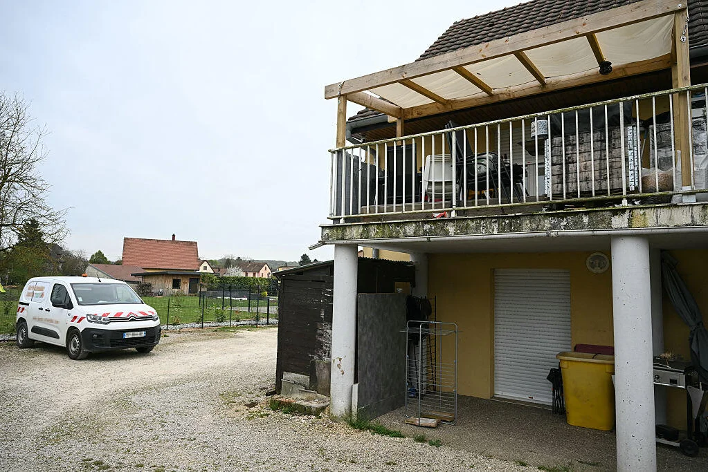

THIS WEEKS KILLER
Inside the Mind of a Serial Killer
This week's featured deep dive explores one of the most disturbing criminal cases,
examining motive, behavior patterns, and investigation breakthroughs.
This week we will talk about the Bind, Torture, Kill serial murderer also known as the BTK killer.
EXCITING UPDATES
Artemis II Mission Around the Moon
Artemis II launched April 1st, 2026. It's mission to orbit around the earth to launch itself to the moon and do a fly by around it took a total of 10 days. It landed safely on the 11th of April. The splashdown was successfully completed in the Pacific Ocean off the coast of San Diego with the assistance of parachutes.
Read More
Horrific Teen Murder in Mississippi

Carly Madason Gregg, 15, was convicted of killing her mum as well as attacking her stepfather in a chilling assault captured on surveillance in Mississippi. After Carly killed her mother, she played with her dogs as if nothing had happened.
Read More
Double Killer Walking Free from Prison

Double killer Frank McCann is walking out free from prison this year despite family of victims having yet to meet parole board on Thursday. Esther's sister Marian Leonard said they will "do everything in our power to keep him in prison"
Read More
Hawaii Doctor Accused of Trying to Kill His Wife
An anaesthesiologist accused of trying to kill his wife during a cliffside hike last year in Hawaii was convicted of a lesser charge of attempted manslaughter based on extreme mental or emotional disturbance after a three-week trial where both he and his wife testified.
Read More
Man Shot in Hand in Derry
Victim was walking home late at night when a man dressed in all black with his face covered appeared in Coleraine and fired at the victim 4 times. One of these shots hit the victim in the hand. Victim is receiving medical treatment.
Read More
Domestic Abuser Jailed After Wife's Death
Kimberly Milne, 28, died after being struck by multiple vehicles in July 2023. Although 40-year-old husband lee Milne denied any wrongdoing he was found guilty last month of culpable homicide and domestic abuse.
Read More
7 million Euro worth of Cannabis Seized

Three men (two in their 30's, one in his 40's) and one woman (in her 20's) have been arrested in Kildare after gardaí done a property search in Athy. They recovered an estimated street value of 7 million euro in cannabis.
Read More
Boy in France Rescued From Father's Utility Van

After police were alerted by a neighbour to "sounds of a child" coming from a van they rushed to the scene forcing the van open finding a child "lying in a fetal position, naked, covered by a blanket on top of a mound of trash and near excrement". Father had been detained while child had been hospitalised.
Read More